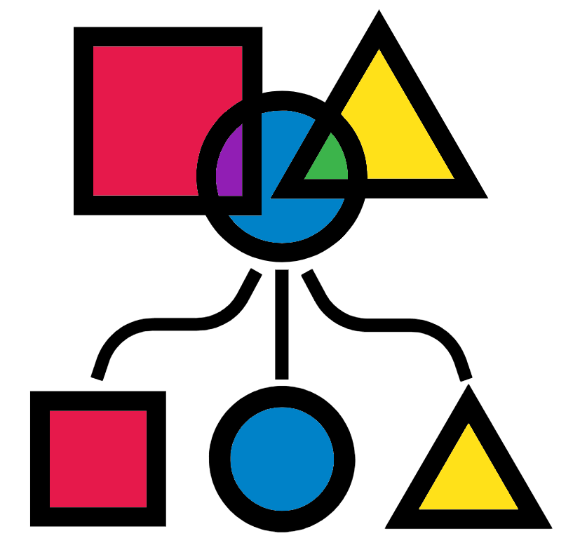

Chapter 10 Assign a taxonomic classification to each amplicon sequence variant

Now that we have defined the sequence variants in the samples, we can assign taxonomic labels to them. Here, we use the sk-learn classifier to assign taxonomy based on the Greengenes database (DeSantis et al., 2006).
Greengenes is a database containing quality-controlled microbial sequence data. Greengenes 16S rDNA sequences come from a large number of species which have been formatted for use in QIIME, by clustering the sequences at a given level of similarity (here, 99%). As for OTU-picking, the more stringent the similarity threshold, the more fine-grained the taxonomic designation (i.e. there are more Greengenes OTUs defined to the species level at 99% than at 97% similarity). The classifier maps the variant sequences, defined above, to OTU representative sequences from the Greengenes set.
First, we need to import the Greengenes data into QIIME2 artifact objects.
qiime tools import \
--input-path
/pub39/tea/luca/Metagenetics_2019/db/gg_13_8_otus/rep_set/99_otus.fasta \
--output-path gg-13-8.99_otus.qza \
--type 'FeatureData[Sequence]'
qiime tools import \
--input-path
/pub39/tea/luca/Metagenetics_2019/db/gg_13_8_otus/taxonomy/99_otu_taxonomy.txt \
--output-path gg-13-8.99.taxa.qza \
--input-format HeaderlessTSVTaxonomyFormat \
--type 'FeatureData[Taxonomy]'These steps will create two objects containing the sequences and their taxonomy, respectively, and should finish in less than 2 mins.
The classifier tool we are going to use requires a training step to reach its optimum performance. The training is performed on a read set extracted from Greengenes representative sequences, including only the amplified region of interest.
Note: Do not run the below command for this tutorial, see below command)
qiime feature-classifier extract-reads \
--i-sequences gg-13-8.99_otus.qza \
--p-f-primer NNNNNGTGCCAGCMGCCGCGGTAA \
--p-r-primer GGACTACHVGGGTWTCTAAT \
# Creating reads of 250 bp as in our case
--p-trunc-len 250 \
--o-reads gg-13-8.99.ref.seqs.qzaGiven that this step may require more than 14h to finish, we won’t be able to run on this occasion. Copy over premade result with the following command:
cp /pub39/tea/luca/Metagenetics_2019/gg-13-8.99.ref.seqs.qza .To train the sk-learn classifier on this set of reads (approx. 25 mins):
qiime feature-classifier fit-classifier-naive-bayes \
--i-reference-reads gg-13-8.99.ref.seqs.qza \
--i-reference-taxonomy gg-13-8.99.taxa.qza \
--o-classifier classifier.trained.qzaThe command for the taxonomy assignment is (approx. 5 min):
qiime feature-classifier classify-sklearn \
--i-classifier classifier.trained.qza \
# Default value for confidence
--p-confidence 0.7 \
--i-reads rep-seqs-dada2.qza \
--o-classification taxonomy.sklearn.qzaTo visualise the taxonomy-abundance bar-chart obtained, run (approx. 1 min):
qiime taxa barplot --i-table table-dada2.qza \
--i-taxonomy taxonomy.sklearn.qza \
--m-metadata-file metadata.file.txt \
--o-visualization taxa-bar-plots.dada2.qzvOnce you have loaded the file in the browser, you may specify the taxonomic level to look at, as well as a few sorting and colouring options.
Questions:
- What is the most abundant taxon, at level 5, in the dataset?
- How do the samples compare to each other?
If you have sequenced any samples with known composition (e.g. mock community), now is the time to see if they behave as expected, you may want to change some step and/or settings of what you have done so far if the composition does not match what you expect. For example, change the de-noising tool or apply more quality filters to further improve the quality of the sequence under examination.